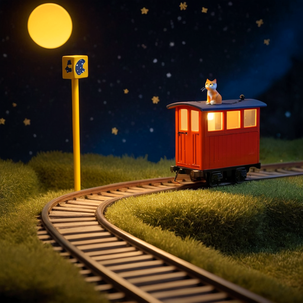
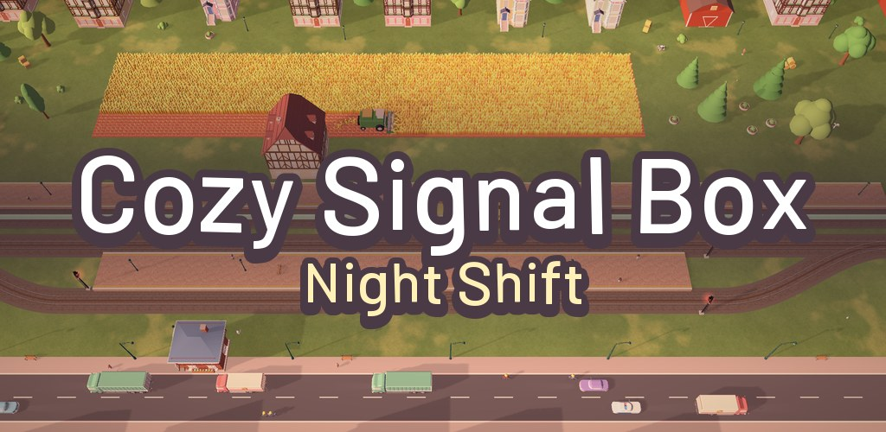
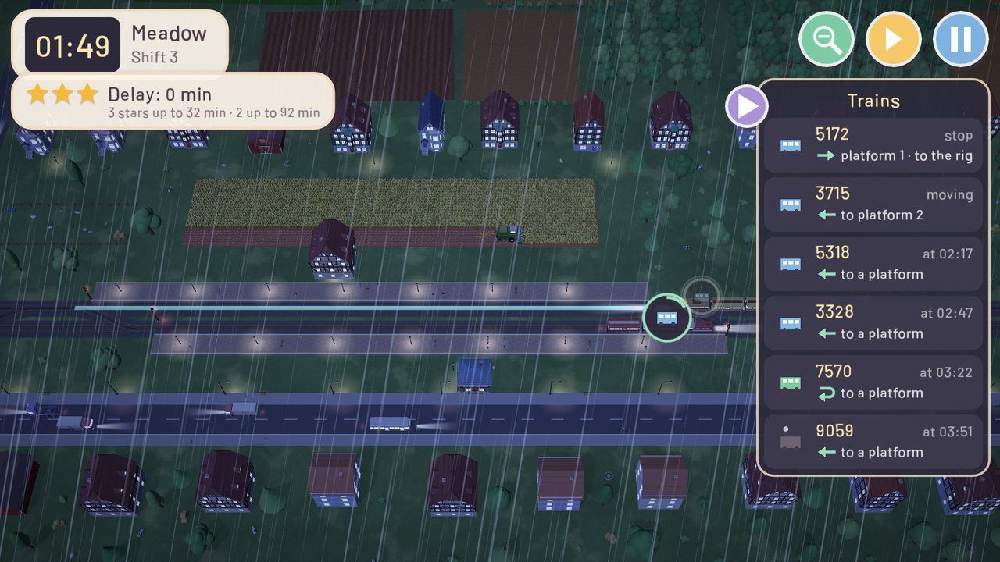
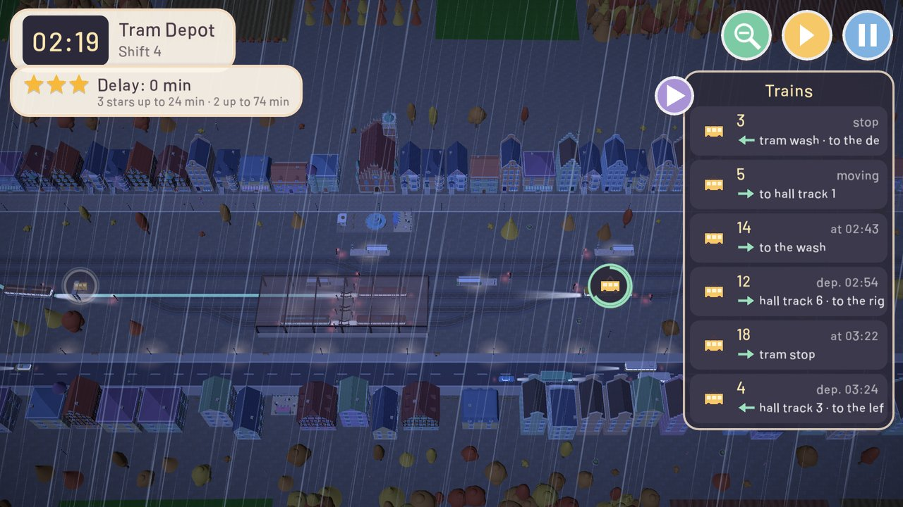
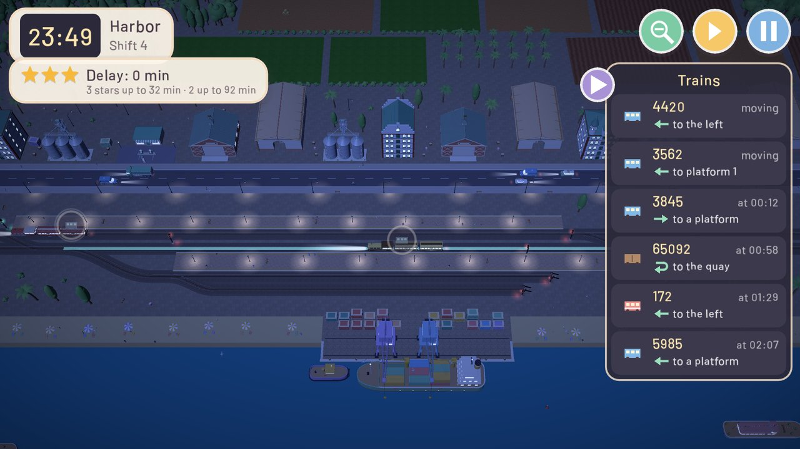
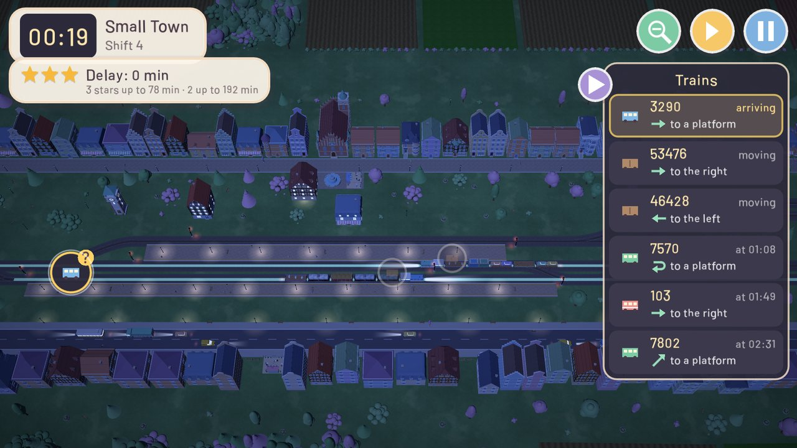
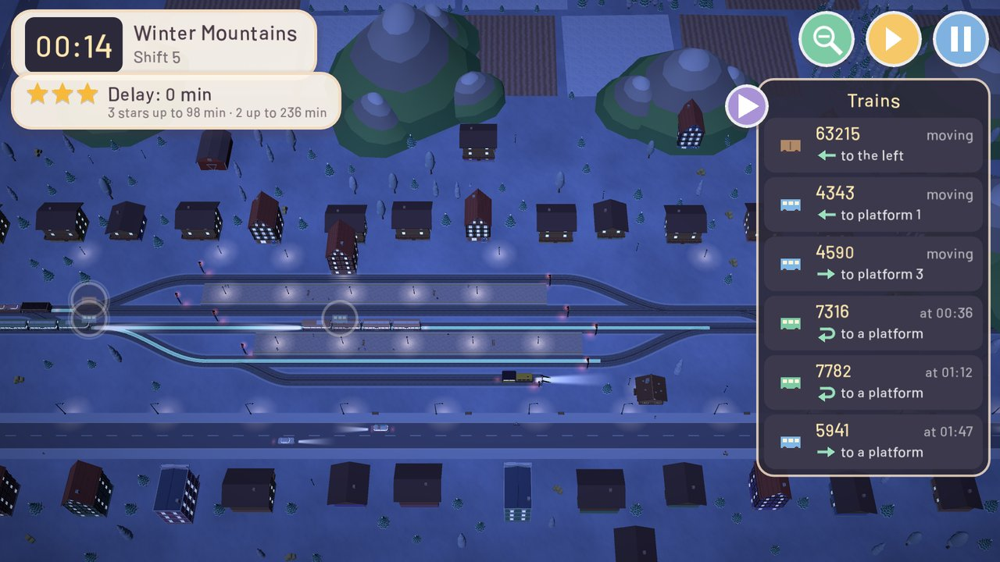
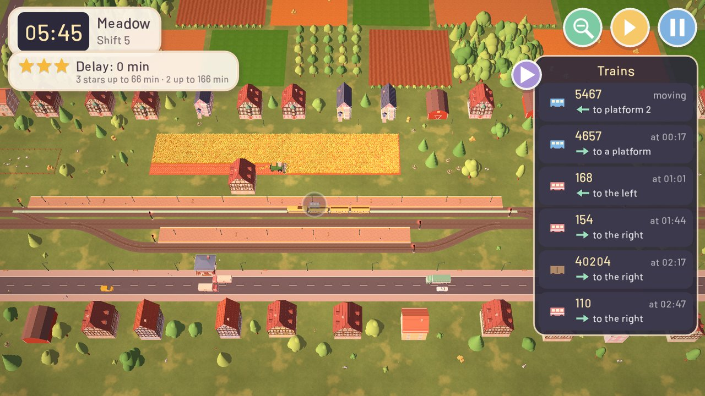
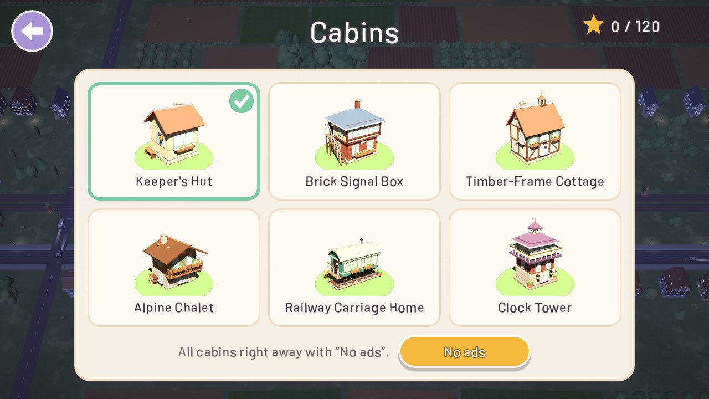
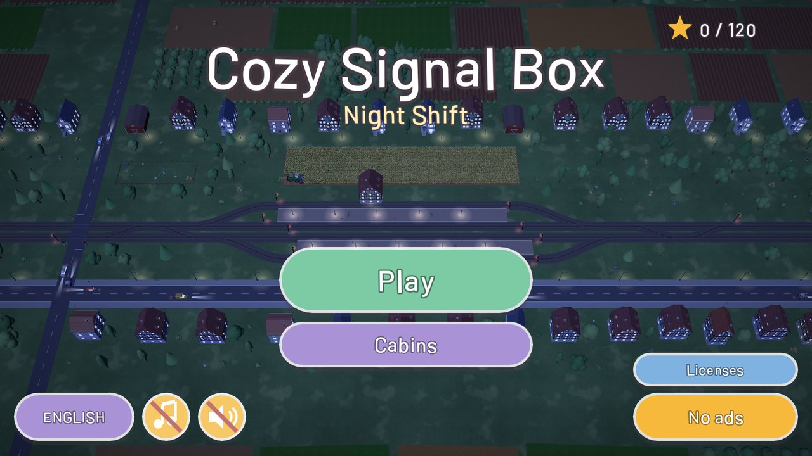

Night Shift · set the routes until sunrise
Welcome to the night shift! The station is quiet, the cat is asleep on the windowsill and the lamps glow along the platforms. You are the dispatcher in a cozy little signal box — and the trains are coming. Tap a train, tap where it should go, and the switches set themselves.
Get it on Google PlayFree · all 40 shifts · Android









All 40 shifts are free, with no subscriptions and no energy. A small banner appears only on the shift list and the results screen, and a full-screen ad shows after every third shift — never during a shift. One small purchase removes the ads and unlocks all cabins at once.
No account needed. Languages: English, Polish, German, Czech, French, Spanish, Portuguese, Italian and Japanese.